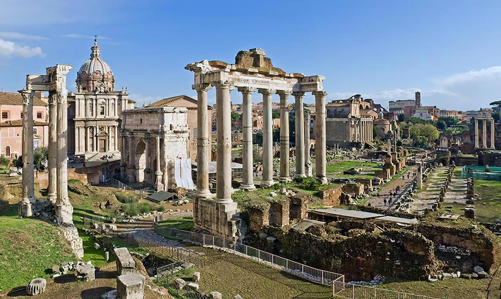

Roma Antiga

A Antiguidade Clássica é um longo período da história da Europa que se estende aproximadamente do século VIII a.C., com o surgimento da poesia grega de Homero, à queda do Império Romano
do Ocidente no século V d.C., mais precisamente no ano 476.
Se da Grécia Antiga adotamos os conceitos políticos como monarquia, tirania, democracia, hegemonia e conceitos filosóficos como antropocentrismo, idealismo e racionalismo, da Roma Antiga
herdamos o conceito de cidadania e justiça, a língua latina e o cristianismo.
Essas civilizações marcaram a história da humanidade, sendo por isso alvo de estudos na contemporaneidade.
Originários dos povos aqueus, jônicos, eólios e dóricos que migraram para a península Balcânica, os povos gregos ficaram conhecidos como helênicos, pois sua organização de clãs se baseava
na crença de que descendiam do herói Heleno. A Roma Antiga corresponde a uma civilização itálica que teve origem no século VIII a. C. Essa região, que no início era uma pequena aldeia,
tornou-se um dos maiores impérios no mundo antigo.
A história de Roma é cercada por lendas. A mais famosa é de que tudo começou com os gêmeos Rômulo e Remo, descendentes de Enéias.
Filhos do Rei Marte e de Reia, os irmãos foram atirados ainda bebês no rio Tibre por ordem de Amúlio, que tentava roubar o trono. Os gêmeos, contudo, sobreviveram, sendo amamentados por uma
loba em seus primeiros dias de vida. Só depois de adultos e de terem conhecimento sobre sua origem é que os irmãos voltaram ao reino para destronar Amúlio, recebendo a missão de fundar Roma.
Mas, desentendimentos acabaram complicando a relação dos irmãos e, em um momento de fúria, Rômulo assassinou Remo. Assim, ele se transformou no primeiro rei de Roma. Com seu extenso
processo de conquistas, Roma passou da mítica cidade dos irmãos Rômulo e Remo para um amplo território.
Ao longo da história, os romanos dominaram a península Ibérica e Itálica e grande parte do litoral norte da África e parte da Ásia Menor, levando seus valores para diversas nações. Dessa
trajetória, herdamos várias línguas, concepções estéticas, instituições e formas de governo, que se tornaram grandes referenciais até os dias de hoje.
Vídeo da Roma Antiga
Questões da Roma Antiga
1) Quando se trata de competência nas construções e nas artes, os atenienses acreditam que poucos sejam capazes de dar conselhos. Quando, ao contrário, se trata de uma deliberação
política, toleram que qualquer um fale, de outro modo não existiria a cidade. BOBBIO, N. Teoria geral da política. Rio de Janeiro: Elsevier, 2000 (adaptado). De acordo com o texto, a
atuação política dos cidadãos atenienses na Antiguidade Clássica tinha como característica fundamental o(a)
a) dedicação altruísta em ações coletivas.
b) participação direta em fóruns decisórios.
c) ativismo humanista em debates públicos.
d) discurso formalista em espaços acadêmicos.
e) representação igualitária em instâncias parlamentares.
2) Mirem-se no exemplo: “Daquelas mulheres de Atenas vivem pros seus maridos”
Os versos da composição remetem à condição das mulheres na Grécia antiga, caracterizada, naquela época, em razão de
a) sua função pedagógica, exercida junto às crianças atenienses.
b) sua importância na consolidação da democracia, pelo casamento.
c) seu rebaixamento de status social frente aos homens.
d) seu afastamento das funções domésticas em períodos de guerra.
e) sua igualdade política em relação aos homens.
3) No aniversário do primeiro decênio da Marcha sobre Roma, em outubro de 1932, Mussolini irá inaugurar sua Via dell impero; a nova Via Sacra do Fascismo, ornada com estátuas de César,
Augusto, Trajano, servirá ao culto do antigo e à glória do Império Romano e de espaço comemorativo do ufanismo italiano. Às sombras do passado recriado ergue-se a nova Roma, que pode
vangloriar-se e celebrar seus imperadores e homens fortes; seus grandes poetas e apólogos como Horácio e Virgílio.
A retomada da Antiguidade clássica pela perspectiva do patrimônio cultural foi realizada com o objetivo de
a) afirmar o ideário cristão para reconquistar a grandeza perdida.
b) utilizar os vestígios restaurados para justificar o regime político.
c) difundir os saberes ancestrais para moralizar os costumes sociais.
d) refazer o urbanismo clássico para favorecer a participação política.
e) recompor a organização republicana para fortalecer a administração estatal.